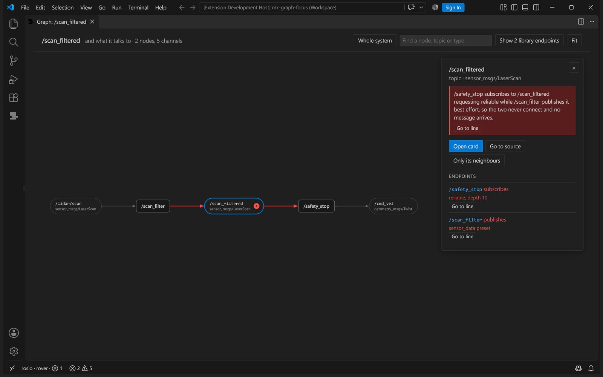
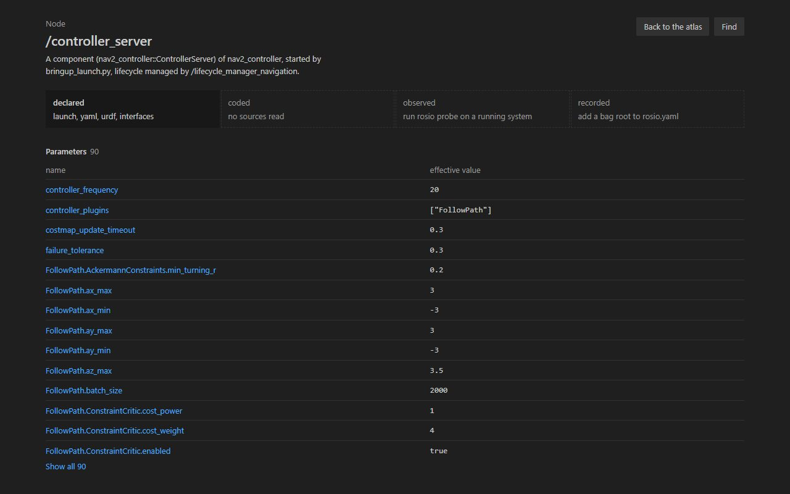

Your robot, in layers.
The rosio brand kit: the mark, the wordmark, colour, type and voice, and how they look in the editor, the terminal and the atlas.
The third layer is out of line: what runs is not what the launch file says.
The mark
Four layers of one system, top to bottom: what the repository declares, what the code does, what a running robot reports and what a recording holds. The third one sits out of line. That offset is the whole product: rosio finds the layer that disagrees.
- Drawn on a 32 unit square: bars 19 by 5, corner 1.3, one unit apart, the third moved six units right.
- Only the moved bar takes the drift colour. The other three are ink.
- Clear space on every side is one bar height. Smallest size is 16 pixels, where it stays legible as four bars.
- Never rotate it, outline it, recolour the other bars or move a different one.
Wordmark and lockup
The name is always lower case: rosio. It is set in Bricolage Grotesque at weight 600 with tracking pulled in by three hundredths of an em, and drawn as outlines so it never depends on an installed font.
In the lockup the mark is exactly as tall as a capital letter, stands on the baseline and keeps a gap of four tenths of that height from the r. Use the wordmark alone where the mark is already on screen, for example beside the activity bar icon.
Two grounds and one drift
Night and chalk take turns as whole fields and serve as each other's ink. Drift appears twice at most on a screen: the moved bar of the mark and the one action. A surface steps one tone away from its ground; nothing is separated by a line or a shadow.
The four layers
Wherever rosio draws a layer, in the atlas, the graph or a legend, it uses these colours, and the name always travels with the colour. The four share one lightness so no layer looks louder than another; every pair stays apart for red and green colour blindness when labelled, and each clears 3:1 against its ground.
- error
- fails the gate. Always with its word or icon.
- warn
- worth a look before a release.
- info
- context, never a colour of alarm.
One face, and code
Declared, coded, observed, recorded.
Bricolage Grotesque does every visible job: headings at weight 600 with tight tracking, text at 400 with leading of one and a half. Its slightly drawn curves keep a technical page from reading like a spec sheet.
JetBrains Mono appears only inside real code, commands and ids. A label, a caption or a number in running text is set in the face, with tabular figures where columns align.
rosio drift --fail-on error
rosio param /controller_server use_sim_timeIn the editor and the atlas




Inside VS Code the extension takes the editor's theme colours for text and surfaces and adds only the layer colours, severity and the mark. The terminal gets the same meanings from the plain ANSI set: yellow declared, cyan coded, green observed, magenta recorded, blue for drift, red and yellow for error and warn.
How rosio talks
Name the value and the file
Parameter configuration may be inconsistent.
max_range is 8.0 in rover.yaml:4 and 12.0 in bringup.launch.py:31. The launch file wins.
Say what to edit
Consider reviewing your remappings.
Rename stop_distnce in rover.yaml:9 to stop_distance; no node declares the misspelt key.
Admit what it cannot see
No publisher found.
The topic name is built at run time in scan_filter.cpp:24, so rosio cannot tell who reads it.
Short sentences, plain words, no exclamation marks, no hype. Every finding is one sentence a person or a small model can repeat as it stands.